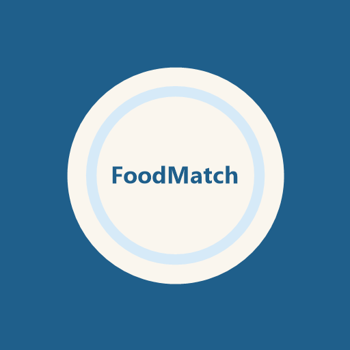

Come bien, ve a lo seguro
Formulario de gustos y alergias
Cuéntanos tus gustos y necesidades
Restaurantes cerca de ti
Mapa ilustrativo: los restaurantes son ejemplos ficticios.
Nombre del restaurante elegido
Menú
Platos de ejemplo¡Que aproveche! Cuando vuelvas, cuéntanos si fuiste.
Cuéntanos tu opinión
Reseñas
«Me ha encantado!! Volvería sin duda»
¡Gracias! Tu respuesta nos ayuda a saber si las recomendaciones funcionan.
About us
Quienes somos
Somos el Equipo 2 del LAB. Nos pasó lo mismo que a ti: llegar a una ciudad nueva y no saber si fiarte del mapa.
Por qué nosotros
El problema no es que falten opciones, sino que no te puedes fiar de la información. Por eso contrastamos menú y precios con varias fuentes y te enseñamos la fecha y la fuente.
Datos y privacidad
Este prototipo no usa cookies. Con el medidor del curso contamos de forma anónima las visitas, los clics y las opciones que eliges. El texto de tu opinión, tu ubicación y las zonas que buscas no se envían al medidor. El mapa es de OpenStreetMap: para dibujarlo, OpenStreetMap recibe qué zona del mapa se carga y, si usas el buscador, el texto que buscas. Con dieta vegana, vegetariana, halal, kosher, saludable o comida rápida te enseñamos restaurantes reales de Madrid con datos de sus webs y de TheFork; con el resto, restaurantes de ejemplo.
Preguntas frecuentes
¿De dónde salen los menús y los precios?
Los contrastamos con varias fuentes y te enseñamos cuándo y de dónde sale cada dato.
¿Y si voy con alguien vegano?
Indicas la dieta de cada persona y solo ves sitios donde todos podéis comer.
¿Cuánto cuesta?
Nada. Es gratis para ti.